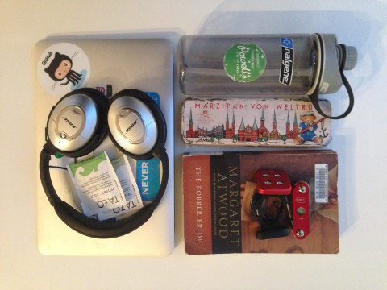

Hi, I am Hannes.
About me
I am a Pythonista at and co-founder of the start-up renooble.com. Coding 8-5 at CrowdStreet.com. Besides that I am interested in various open source projects and developments. Lately, I am spending my development time between Python, and js frameworks, such as AngularJS and ember.js and data science (espcially around machine learning.
Living in Oregon, I am enjoying coffee, food, wine, beer, an amazing tech scene and a million meetups each week.
Feel free to ping me via @hanneshapke

Projects and Endeavors
renooble, Inc. is an innovative start-up which reduced the acquisition costs for new solar customers.
I contributed to this open source API wrapper for Python. It allows Python coders to use the Zillow API in a pythonic way.
This open source API wrapper lets you access the NREL API for utility information for the U.S.
This open source API wrapper lets you access the NREL PVWatts v5 API to calculate the solar potential for any place on earth.
I'm contributing to the rewriting of the latest volunteer application for the Open Source Bridge conference.
This open source library lets you extract the geolocations from images taken with smartphones. This is pretty handy if you want to let your web app users submit photos instead of filling in a lengthy form with location and timezone questions.
motionless lets you create urls for google maps static image API. I contributed to this open source package to increase its functionality.
Talks and Gossip
From a python beginner to a django developer in 6 months
November 2nd, 2013 // PyCon Uruguay 2013 // Montevideo, Uruguay
Share your code with the Python world by creating pip packages
January 28th, 2014 // PDX Python User Group // Portland, Oregon
What's In My Bag
February 3rd, 2014 // female entrepreneurs of the world // Santiago, Chile
Making Django sites more responsive with REST and AngularJS
August 25th, 2014 // PDX Code Guilt // Portland, Oregon
August 27th, 2014 // PDX Python User Group // Portland, Oregon
Python, GeoData and Maps
October 11th, 2015 // PyDX // Portland, Oregon
2015 Readings
Home Faber, Max Frisch (reread) ||
The Wind-Up Bird Chronicle, Haruki Murakami ||
Zero to One, Peter Thiel ||
Colorless Tsukuru Tazaki, Haruki Murakami ||
The Handmaid's Tale, Margaret Atwood
Music
I am listening to all sorts of music, mostly while coding. Here are some good tracks:
Nicholas Jaar ||
DJ Sasha ||
Wankelmut ||
High Contrast ||
London Electricity ||
Above & Beyond ||
Godspeed you! black emporer ||
Shostakovich: Symphony No. 5 / Bernstein ||
Bach: Cello Suites / Pablo Casals
Background image was taken on top of South Sister, OR. Elevation: 10,358 ft (3,157 m). August 2015.